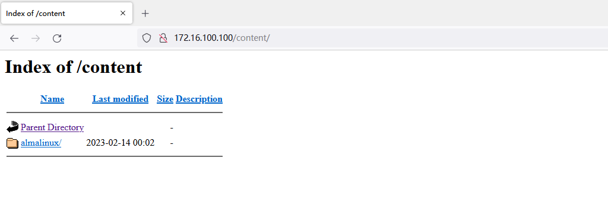
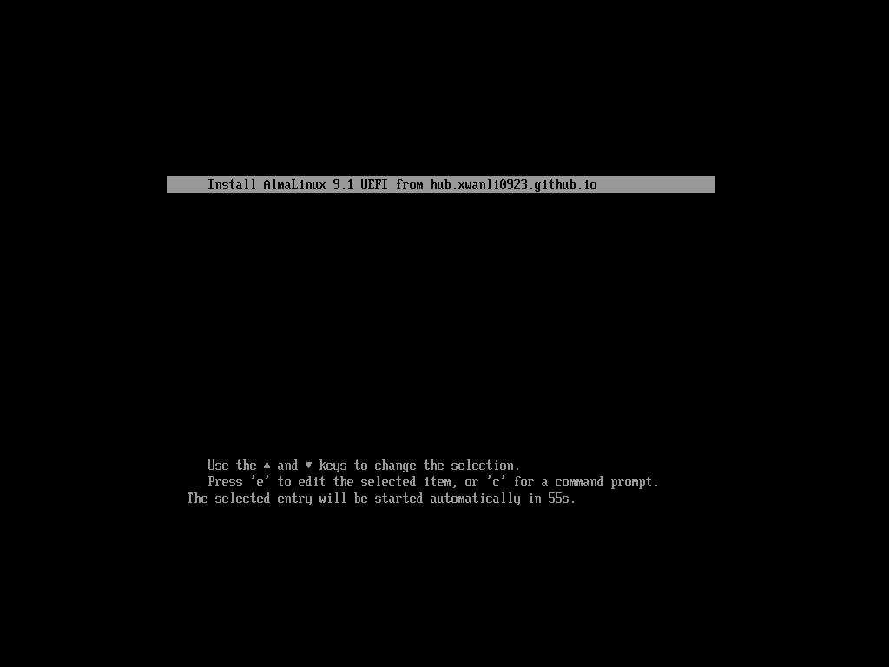
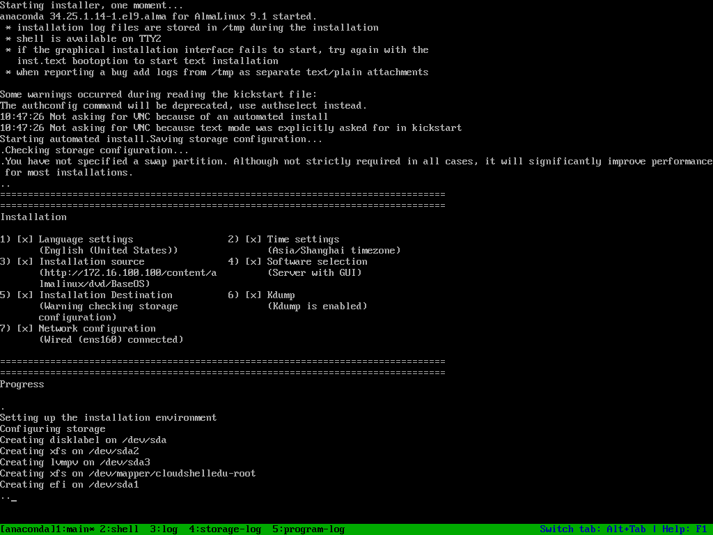
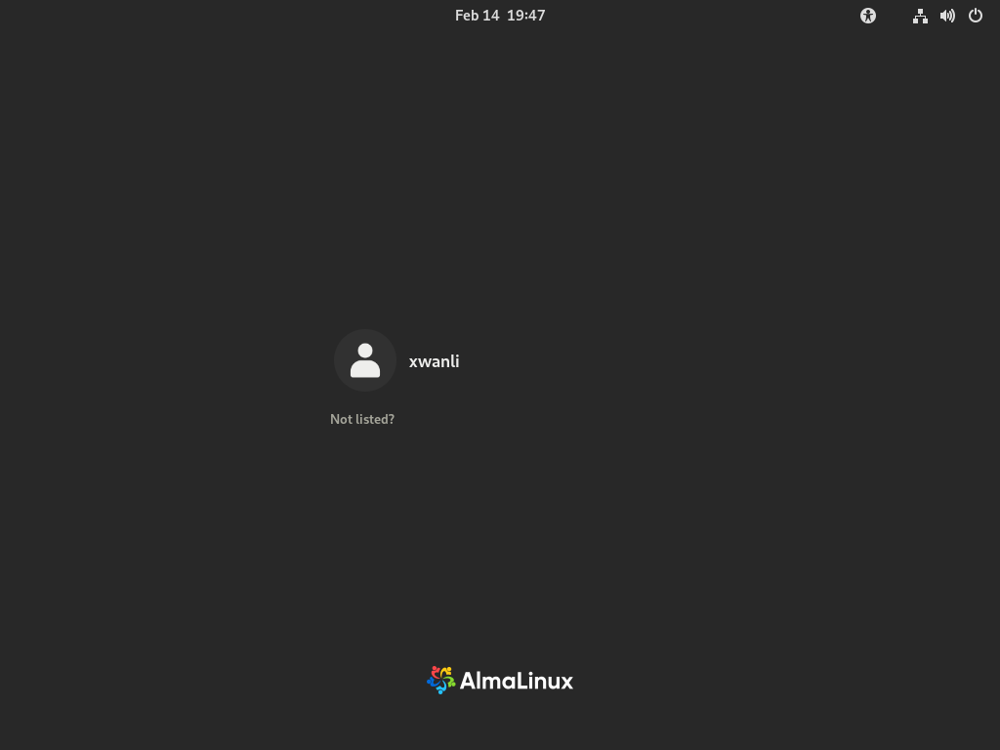
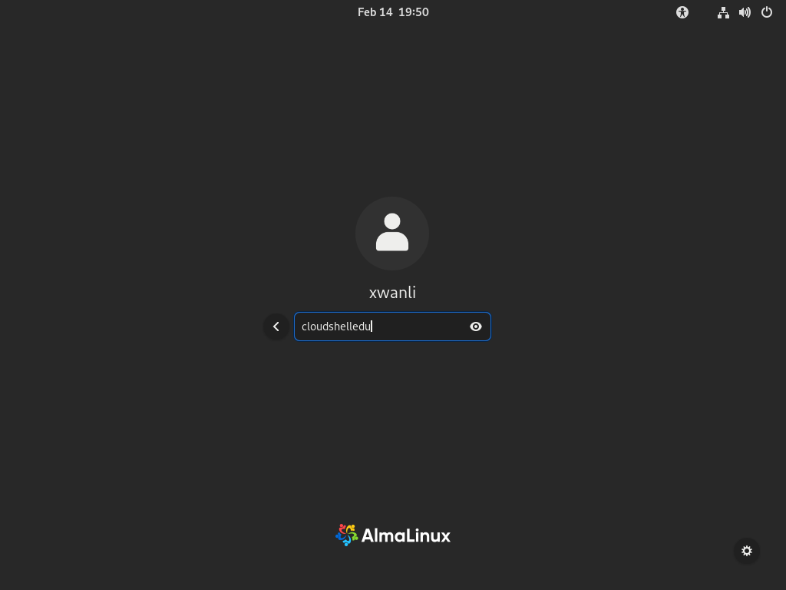
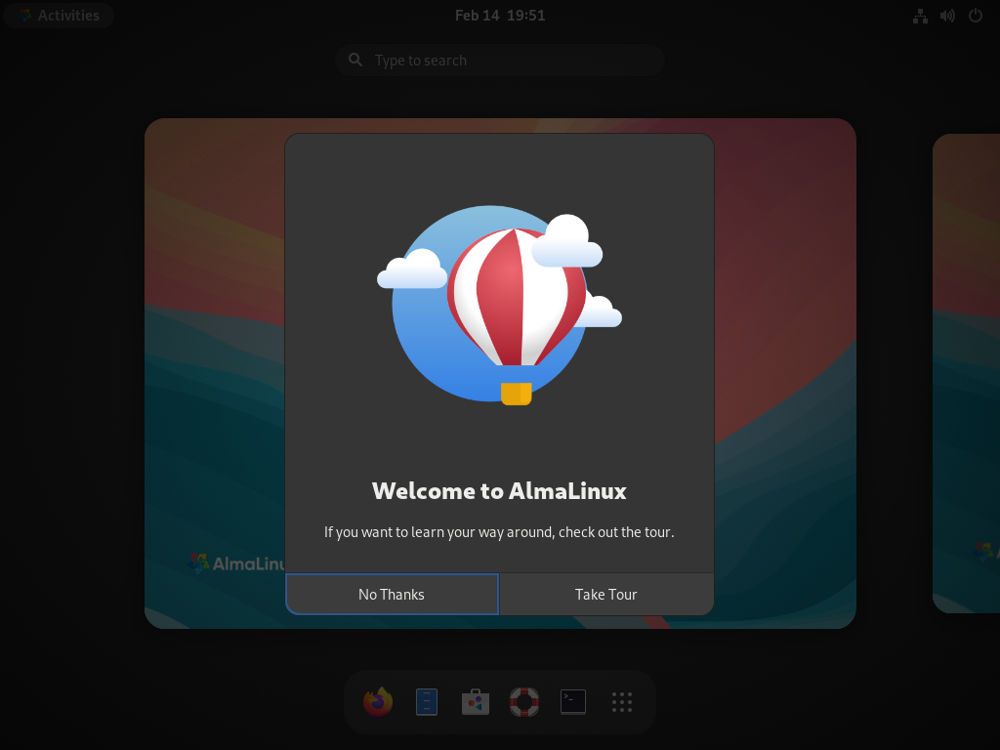
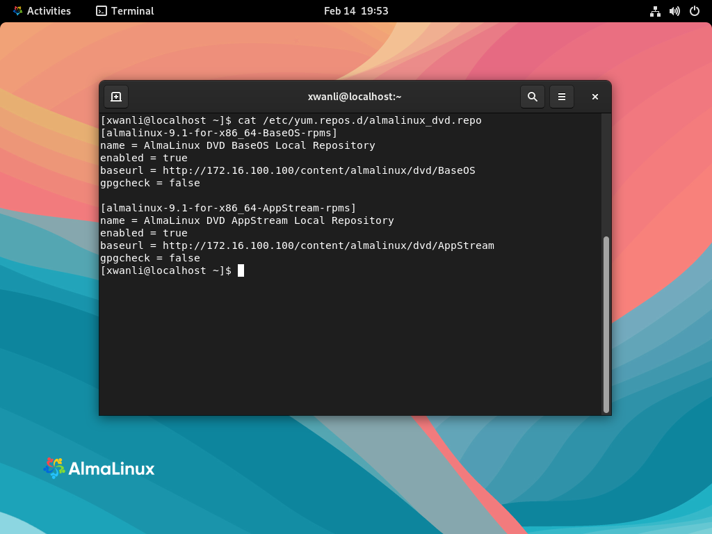

使用Kickstart自动化部署Linux操作系统

[图片来源：Fedora Wiki ]
{kind=link}
作者: 邢万里
文档说明
本文介绍了如何使用 Kickstart 实现自动化部署 Linux 操作系统
- 系统版本: AlmaLinux 9.1
- 主机名: hub.xwanli0923.github.io
准备阶段
1. 部署HTTP服务器
-
在已经完成安装的 AlmaLinux 中，先配置一个本地 YUM 仓库，便于安装
httpd软件包 -
先将系统光盘挂载到
/mnt目录下
[xwanli@hub.xwanli0923.github.io ~]$ lsblk
NAME MAJ:MIN RM SIZE RO TYPE MOUNTPOINTS
sda 8:0 0 50G 0 disk
├─sda1 8:1 0 600M 0 part /boot/efi
├─sda2 8:2 0 1G 0 part /boot
└─sda3 8:3 0 48.4G 0 part
└─cloudshelledu-root 253:0 0 47G 0 lvm /
sr0 11:0 1 8G 0 rom
[xwanli@hub.xwanli0923.github.io ~]$ sudo mount /dev/sr0 /mnt
mount: /mnt: WARNING: source write-protected, mounted read-only.
[xwanli@hub.xwanli0923.github.io ~]$ df -Th /mnt
Filesystem Type Size Used Avail Use% Mounted on
/dev/sr0 iso9660 8.1G 8.1G 0 100% /mnt
- 编写 YUM 仓库文件
[xwanli@hub.xwanli0923.github.io ~]$ sudo -i
[xwanli@hub.xwanli0923.github.io ~]$ sudo ls /mnt
AppStream BaseOS EFI images isolinux LICENSE media.repo TRANS.TBL
[xwanli@hub.xwanli0923.github.io ~]$ sudo -i
[root@hub.xwanli0923.github.io ~]# cat > /etc/yum.repos.d/almalinux_dvd.repo <<-EOF
> [almalinux-9.1-for-x86_64-BaseOS-rpms]
> name = AlmaLinux DVD BaseOS Local Repository
> enabled = true
> baseurl = file:///mnt/BaseOS
> gpgcheck = false
>
> [almalinux-9.1-for-x86_64-AppStream-rpms]
> name = AlmaLinux DVD AppStream Local Repository
> enabled = true
> baseurl = file:///mnt/AppStream
> gpgcheck = false
> EOF
[root@hub.xwanli0923.github.io ~]# exit
- 禁用默认的软件仓库(可选)
[xwanli@hub.xwanli0923.github.io ~]$ sudo dnf repolist
repo id repo name
almalinux-9.1-for-x86_64-AppStream-rpms AlmaLinux DVD AppStream Local Repository
almalinux-9.1-for-x86_64-BaseOS-rpms AlmaLinux DVD BaseOS Local Repository
appstream AlmaLinux 9 - AppStream
baseos AlmaLinux 9 - BaseOS
extras AlmaLinux 9 - Extras
[xwanli@hub.xwanli0923.github.io ~]$ sudo dnf config-manager --disable appstream
[xwanli@hub.xwanli0923.github.io ~]$ sudo dnf config-manager --disable baseos
[xwanli@hub.xwanli0923.github.io ~]$ sudo dnf config-manager --disable extras
[xwanli@hub.xwanli0923.github.io ~]$ sudo dnf repolist
repo id repo name
almalinux-9.1-for-x86_64-AppStream-rpms AlmaLinux DVD AppStream Local Repository
almalinux-9.1-for-x86_64-BaseOS-rpms AlmaLinux DVD BaseOS Local Repository
- 关闭
SELinux
[xwanli@hub.xwanli0923.github.io ~]$ sudo sed -i 's/SELINUX=enforcing/SELINUX=permissive/g' /etc/selinux/config
[xwanli@hub.xwanli0923.github.io ~]$ sudo setenforce permissive
2. 配置基于HTTP的YUM仓库
-
安装并配置
httpd服务，用于安装期间所需的软件包提供YUM仓库 -
安装
httpd服务
[xwanli@hub.xwanli0923.github.io ~]$ sudo dnf install httpd -y
- 创建内容目录
[xwanli@hub.xwanli0923.github.io ~]$ sudo mkdir -p /content/almalinux/{dvd,ks}
[xwanli@hub.xwanli0923.github.io ~]$ sudo ln -s /content /var/www/html/
- 允许防火墙通过
http流量
[xwanli@hub.xwanli0923.github.io ~]$ sudo firewall-cmd --add-service=http
[xwanli@hub.xwanli0923.github.io ~]$ sudo firewall-cmd --runtime-to-permanent
- 运行
httpd服务并允许开机自动运行
[xwanli@hub.xwanli0923.github.io ~]$ sudo systemctl enable httpd --now
[xwanli@hub.xwanli0923.github.io ~]$ ss -tplna | grep :80
LISTEN 0 511 *:80 *:*
- 客户端测试

- 将光盘文件中的内容复制到
/content/almalinux/dvd中
[xwanli@hub.xwanli0923.github.io ~]$ sudo rsync -rP /mnt/* /content/almalinux/dvd/
- 修改本地的YUM仓库配置文件
[xwanli@hub.xwanli0923.github.io ~]$ sudo sed -i 's/mnt/content\/almalinux\/dvd/g' /etc/yum.repos.d/almalinux_dvd.repo
3. 部署 DHCP 服务器
- 安装
dhcp软件包
[xwanli@hub.xwanli0923.github.io ~]$ sudo dnf install dhcp-server -y
- 配置
dhcpd服务
[xwanli@hub.xwanli0923.github.io ~]$ rpm -ql dhcp-server | grep example
/usr/share/doc/dhcp-server/dhcpd.conf.example
/usr/share/doc/dhcp-server/dhcpd6.conf.example
[xwanli@hub.xwanli0923.github.io ~]$ sudo cp /usr/share/doc/dhcp-server/dhcpd.conf.example /etc/dhcp/dhcpd.conf
- 编辑
dhcpd.conf文件
option space pxelinux;
option pxelinux.magic code 208 = string;
option pxelinux.configfile code 209 = text;
option pxelinux.pathprefix code 210 = text;
option pxelinux.reboottime code 211 = unsigned integer 32;
option architecture-type code 93 = unsigned integer 16;
subnet 172.16.100.0 netmask 255.255.255.0 {
class "virtual" {
match if substring (hardware, 1, 3) = 52:54:00 or
substring (hardware, 1, 3) = 00:16:3e or
substring (hardware, 1, 3) = 00:16:36;
}
class "microsoft-clients" {
match if substring(option vendor-class-identifier,0,4) = "MSFT";
}
class "pxeclients" {
match if substring(option vendor-class-identifier, 0, 9) = "PXEClient";
next-server 172.16.100.100;
option tftp-server-name "172.16.100.100";
if option architecture-type = 00:07 {
# UEFI SYSTEMS
filename "BOOTX64.EFI";
} else {
# EVERYBODY ELSE (BIOS)
filename "pxelinux.0";
}
}
option routers 172.16.100.1;
option subnet-mask 255.255.255.0;
option domain-name-servers 172.16.100.100;
default-lease-time 21600;
max-lease-time 86400;
# Assign IPs 201-220 to PXE clients
pool {
deny members of "virtual";
allow members of "pxeclients";
default-lease-time 120;
max-lease-time 180;
range 172.16.100.201 172.16.100.220;
}
pool {
deny members of "virtual";
default-lease-time 120;
max-lease-time 180;
range 172.16.100.101 172.16.100.200;
}
}
参考文档：
PXELINUX Wiki: https://wiki.syslinux.org/wiki/index.php?title=PXELINUX
RFC 2132: DHCP Options and BOOTP Vendor Extensions
RFC 4578: DHCP Options for PXE
RFC 5071: DHCP Options used by PXELINUX
- 启动
dhcpd服务并开机运行
[xwanli@hub.xwanli0923.github.io ~]$ sudo systemctl enable dhcpd --now
[xwanli@hub.xwanli0923.github.io ~]$ sudo systemctl status dhcpd
● dhcpd.service - DHCPv4 Server Daemon
Loaded: loaded (/usr/lib/systemd/system/dhcpd.service; enabled; vendor preset: disabled)
Active: active (running) since Tue 2023-02-14 00:39:35 CST; 5s ago
Docs: man:dhcpd(8)
man:dhcpd.conf(5)
Main PID: 28022 (dhcpd)
Status: "Dispatching packets..."
Tasks: 1 (limit: 24580)
Memory: 5.2M
CPU: 11ms
CGroup: /system.slice/dhcpd.service
└─28022 /usr/sbin/dhcpd -f -cf /etc/dhcp/dhcpd.conf -user dhcpd -group dhcpd --no-pid
Feb 14 00:39:35 hub.xwanli0923.github.io dhcpd[28022]: Database file: /var/lib/dhcpd/dhcpd.leases
Feb 14 00:39:35 hub.xwanli0923.github.io dhcpd[28022]: PID file: /var/run/dhcpd.pid
Feb 14 00:39:35 hub.xwanli0923.github.io dhcpd[28022]: Source compiled to use binary-leases
Feb 14 00:39:35 hub.xwanli0923.github.io dhcpd[28022]: Wrote 0 class decls to leases file.
Feb 14 00:39:35 hub.xwanli0923.github.io dhcpd[28022]: Wrote 0 leases to leases file.
Feb 14 00:39:35 hub.xwanli0923.github.io dhcpd[28022]: Listening on LPF/ens160/00:0c:29:12:6a:60/172.16.100.0/24
Feb 14 00:39:35 hub.xwanli0923.github.io dhcpd[28022]: Sending on LPF/ens160/00:0c:29:12:6a:60/172.16.100.0/24
Feb 14 00:39:35 hub.xwanli0923.github.io dhcpd[28022]: Sending on Socket/fallback/fallback-net
Feb 14 00:39:35 hub.xwanli0923.github.io dhcpd[28022]: Server starting service.
Feb 14 00:39:35 hub.xwanli0923.github.io systemd[1]: Started DHCPv4 Server Daemon.
- 添加
dhcp服务通过防火墙规则
[xwanli@hub.xwanli0923.github.io ~]$ sudo firewall-cmd --add-service=dhcp
[xwanli@hub.xwanli0923.github.io ~]$ sudo firewall-cmd --runtime-to-permanent
3. 准备 TFTP 服务器
- 安装 TFTP 服务器
[xwanli@hub.xwanli0923.github.io ~]$ sudo dnf install tftp-server
- 启动
tftp服务器并允许开机自动运行
[xwanli@hub.xwanli0923.github.io ~]$ sudo systemctl enable tftp.socket --now
- 添加
tftp服务通过防护墙规则
[xwanli@hub.xwanli0923.github.io ~]$ sudo firewall-cmd --add-service=tftp
[xwanli@hub.xwanli0923.github.io ~]$ sudo firewall-cmd --runtime-to-permanent
4. 准备自动应答文件kickstart
-
kickstart 文件生成可以使用当前系统
/root/anaconda-ks.cfg进行修改，或者使用红帽的 Kickstart Generator 生成 -
kickstart自动应答文件语法可参考：- https://pykickstart.readthedocs.io/en/latest/kickstart-docs.html#what-are-kickstart-installations
-
本示例采用参考文档以及原有文件修改生成
- 文件位置
/content/almalinux/ks/install.ks
lang en_US
keyboard --xlayouts='us'
timezone Asia/Shanghai --utc
repo --name="AppStream" --baseurl=http://172.16.100.100/content/almalinux/dvd/AppStream
%addon com_redhat_dump --disable
%end
network --bootproto=dhcp --device=link --activate
rootpw $2b$10$8yIFVJWpMRASzobheELgT.BZFZQ/Ubu1IysRiYWu95BqEI/4zCYsW --iscrypted
# The xwanli's password is `cloudshell`
user --groups=wheel --name=xwanli --password=$6$XZTVGyVbdYxk9wh6$uDcnyVxqJjig90bc7.ti7S5PVTDFk7G3xyix/JT0/9p4KVnUN7EU8VJR5hOjAGcoztca3d4aydvYyTcYDE0Zy1 --iscrypted --gecos="xwanli"
reboot
text
url --url=http://172.16.100.100/content/almalinux/dvd/BaseOS
bootloader --append="rhgb quiet"
zerombr
clearpart --all --initlabel
part pv.0 --fstype="lvmpv" --ondisk=sda --size=10240 --grow
part /boot --fstype="xfs" --ondisk=sda --size=2048
volgroup cloudshelledu --pesize=4096 pv.0
logvol / --fstype="xfs" --size=10240 --grow --name=root --vgname=cloudshelledu
part /boot/efi --fstype=efi --size=600 --fsoptions="umask=0077,shortname=winnt"
firstboot --disable
auth --enableshadow --passalgo=sha512
selinux --permissive
firewall --enabled --ssh
skipx
%post
cat > /etc/yum.repos.d/almalinux_dvd.repo <<-EOF
[almalinux-9.1-for-x86_64-BaseOS-rpms]
name = AlmaLinux DVD BaseOS Local Repository
enabled = true
baseurl = http://172.16.100.100/content/almalinux/dvd/BaseOS
gpgcheck = false
[almalinux-9.1-for-x86_64-AppStream-rpms]
name = AlmaLinux DVD AppStream Local Repository
enabled = true
baseurl = http://172.16.100.100/content/almalinux/dvd/AppStream
gpgcheck = false
EOF
dnf group install -y "Server with GUI"
dnf remove -y gnome-initial-setup
systemctl set-default graphical.target
%end
%packages
@^graphical-server-environment
@guest-agents
%end
5. 向 TFTP中添加所需文件
- 安装
TFTP Booting文件,并拷贝pxelinux.0文件至/var/lib/tftpboot
[xwanli@hub.xwanli0923.github.io ~]$ sudo dnf instal -y syslinux-tftpboot
[xwanli@hub.xwanli0923.github.io ~]$ sudo cp /tftpboot/pxelinux.0 /var/lib/tftpboot/
- 将光盘中所需文件拷贝至
/var/lib.tftpboot
[xwanli@hub.xwanli0923.github.io ~]$ sudo cp -r /content/almalinux/dvd/EFI/BOOT/* /var/lib/tftpboot/
[xwanli@hub.xwanli0923.github.io ~]$ sudo cp -r /content/almalinux/dvd/images /var/lib/tftpboot/
[xwanli@hub.xwanli0923.github.io ~]$ sudo cp -r /content/almalinux/dvd/isolinux/* /var/lib/tftpboot/
- 修改
EFI引导时所需的配置文件
[xwanli@hub.xwanli0923.github.io ~]$ sudo vim /var/lib/tftpboot/grub.cfg
[xwanli@hub.xwanli0923.github.io ~]$ sudo chmod 644 /var/lib/tftpboot/grub.cfg
- 修改内容如下：
set default="1"
function load_video {
insmod efi_gop
insmod efi_uga
insmod video_bochs
insmod video_cirrus
insmod all_video
}
load_video
set gfxpayload=keep
insmod gzio
insmod part_gpt
insmod ext2
set timeout=60
### END /etc/grub.d/00_header ###
search --no-floppy --set=root -l 'AlmaLinux-9-1-x86_64-dvd'
### BEGIN /etc/grub.d/10_linux ###
menuentry 'Install AlmaLinux 9.1 UEFI from hub.xwanli0923.github.io' --class fedora --class gnu-linux --class gnu --class os {
linuxefi /images/pxeboot/vmlinuz inst.repo=http://172.16.100.100/content/almalinux/dvd/ inst.ks=http://172.16.100.100/content/almalinux/ks/install.ks quiet
initrdefi /images/pxeboot/initrd.img
}
- 创建
Legacy引导所需文件
[xwanli@hub.xwanli0923.github.io ~]$ sudo mkdir /var/lib/tftpboot/pxelinux.cfg
[xwanli@hub.xwanli0923.github.io ~]$ sudo mv /var/lib/tftpboot/isolinux.cfg /var/lib/tftpboot/pxelinux.cfg/default
[xwanli@hub.xwanli0923.github.io ~]$ sudo chmod 644 /var/lib/tftpboot/pxelinux.cfg/default
- 修改内容如下：
default vesamenu.c32
timeout 600
display boot.msg
...ommit...
menu tabmsg Press Tab for full configuration options on menu items.
menu separator # insert an empty line
menu separator # insert an empty line
label linux
menu label ^Install AlmaLinux 9.1 Legacy from hub.xwanli0923.github.io
kernel vmlinuz
append initrd=initrd.img inst.repo=http://172.16.100.100/content/almalinux/dvd/ inst.ks=http://172.16.100.100/content/almalinux/ks/install.ks quiet
label local
menu label Boot from ^local drive
localboot 0xffff
menu separator # insert an empty line
menu end
6. 测试部署
- 使用
UEFI引导


- 开机后使用创建的账户
xwanli登录


- 登录成功


7. 结语
本文主要以UEFI引导的配置为主，如果需要部署Legacy MBR的引导模式，需要您对kickstart文件进行调整；或者编写 %pre ... %end部分，判断系统引导模式，从而自动判断使用EUFI或Legacy MBR 。